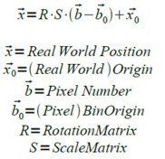
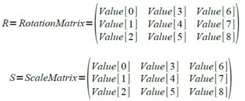
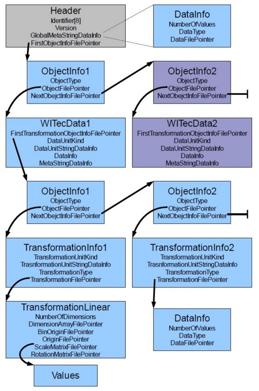

本章将详细描述WITec二进制导出文件格式。使用此格式可以将WITec项目对象（图谱、图像、位图和文本对象）以简单灵活的方式导出为二进制数据。二进制导出格式允许在一个文件中存储多个对象：不仅存储数据本身，还存储解释数据所需的所有信息，例如维度、变换、附加元信息等。
第一部分包含文件格式组件技术的一些基本信息。第二部分描述文件头。最后解释了一般数据的存储方式，特别是WITec项目对象如何以二进制格式存储。
请向 WITec支持团队 索取C头文件和示例伪代码！
结构体、指针和数据
WITec二进制导出格式由以下几个组件组成：
- 结构体（C结构体），可以通过结构体大小轻松加载到内存中。这些结构体包含从文件读取数据所需的信息，例如文件中存储了哪些数据、数据在文件中的位置、存储的数据类型以及其他信息。
- 文件指针，它是所有结构体的组成部分，是64位指针，指向可以找到另一个结构体或数据值的文件地址。所有文件指针都是文件内部的绝对指针。
- 数据值，可以具有 不同的数据类型——多个值按顺序存储。
可以在内存中创建结构体实例，并通过从文件中读取 <结构体大小> 个字节来填充它们。
结构体使用结构体打包，即变量之间使用小的内存间隙来优化性能，因此结构体大小不一定是所有变量大小的总和（请参阅网络上的„数据结构对齐“）。所有结构体使用8字节的打包大小。大多数C/C++编译器使用8字节结构体打包，或者至少有办法更改打包大小（例如通过 #pragma pack(n) 语句）。
文件头
导出的二进制文件从文件位置 0x00 开始，包含文件头——TWITecBinExportHeader结构体——这是此格式中唯一具有静态位置的结构体。其他结构体可以存储在文件的任何位置，要查找结构体的位置，必须先通过文件指针读取它们的文件位置。
struct TWITecBinExportHeader
{
char Identifier[8];
unsigned int Version;
TWITecBinExportDataInfo GlobalMetaStringDataInfo;
FILE_POINTER FirstObjectInfoFilePointer;
};
- Identifier（文件标识符）：
描述文件格式标识符（ASCII）。在开始导入时，标识符应与WITecBinaryExport.h头文件中的标识符（8字节，无null终止符）进行比较。
- Version（版本）：
表示此文件格式版本的无符号整数。如果版本号发生变化，可能意味着某些结构体发生了变化，因此与旧的导出格式不再兼容。读取的版本号应与WITecBinaryExport.h头文件中的版本进行比较。
- GlobalMetaStringDataInfo（全局元信息字符串数据信息）：
是一个TWITecBinExportDataInfo结构体，包含有关元信息字符串的信息。TWITecBinExportDataInfo结构体用于所有类型的数据（包括字符串），将在本文档后面描述。此元信息字符串包含以下全局信息：
- 导出数据对象前打开的WITec项目文件的原始文件名
- 导出的数据对象数量
- 导出日期。
- FirstObjectInfoFilePointer（第一个对象信息文件指针）
是一个64位无符号整数，存储第一个对象信息结构体（TWITecBinExportObjectInfo）的地址。要加载第一个对象信息结构体，必须创建一个TWITecBinExportObjectInfo结构体，并用该文件指针位置处的文件字节填充它。
数据
TWITecBinExportDataInfo结构体定义了具有任意数量的值和任意数据类型的数据信息。因此，此结构体既能存储WITec项目数据对象的数据，也能存储此文件格式中其他导出结构体使用的字符串，例如头结构体中的GlobalMetaStringDataInfo。
struct TWITecBinExportDataInfo
{
unsigned __int64 NumberOfValues;
TWITecDataType DataType;
FILE_POINTER DataFilePointer;
};
- NumberOfValues（值的数量）
定义数据值的数量。
- DataType（数据类型）
定义数据类型以及一个数据值的大小。DataType 可以是整数或浮点数、RGB颜色值，甚至ASCII字符。TWITecDataType是一个枚举（像所有枚举一样被当作4字节整数处理），定义在WITecDataType.h头文件中。
- DataFilePointer（数据文件指针）
这是一个64位文件指针，指向第一个数据值的文件位置。从此文件位置可以通过读取 <NumberOfValues * sizeof(DataType)> 字节来加载数据。
字符串数据
当TWITecBinExportDataInfo表示字符串数据（DataType = ASCII）时，NumberOfValues变量定义字符数量（不含null终止符）。
注意：如果使用null终止的字符串，必须分配 <NumberOfValues+1> 字节的内存，并将最后一个字节设置为 '\0'。
元信息
TWITecBinExportHeader结构体和TWITecBinExportWITecData都包含用于元信息的变量，这些变量是TWITecBinExportDataInfo类型的结构体变量。这些元信息字符串包含键和值——每个值字符串属于一个键字符串。
元信息字符串是一个大字符串，可以存储任意数量的键值字符串对。字符串之间通过两个控制字符 CR 和 LF（回车符 0x0D 和换行符 0x0A）分隔。因此两行表示一个键值对。以下示例显示了两个键及其对应的值：
“ExcitationWavelength[CR+LF]532.0[CR+LF]Caption[CR+LF]My Spectrum Caption[CR+LF]”
数据对象
为了允许在一个文件中存储多个数据对象，此文件格式使用链表，可以通过遍历来获取所有导出的数据对象。
TWITecBinExportHeader结构体包含一个指向链表中第一个TWITecBinExportObjectInfo结构体的文件指针。此第一个对象信息又指向第一个WITec数据对象结构体以及下一个对象信息（即第二个数据对象的信息）。
TWITecBinExportObjectInfo结构体定义如下：
struct TWITecBinExportObjectInfo
{
TWITecBinExportObjectType ObjectType;
FILE_POINTER ObjectFilePointer;
FILE_POINTER NextObjectInfoFilePointer;
};
- ObjectType（对象类型）
对象类型定义此对象中存储的结构体类型。对于数据对象链表（从头结构体中的第一个文件指针开始），这通常应该是TWITecBinExportObjectWITecData，其中存储了WITec项目数据对象（如图谱、图像、位图或文本对象）的信息。其他对象类型将在本文档后面描述。
- ObjectFilePointer（对象文件指针）
指向包含对象所有必要信息的结构体。
- NextObjectInfoFilePointer（下一个对象信息文件指针）
指向下一个对象信息结构体，该结构体也是TWITecBinExportObjectInfo类型。如果此指针为空，则没有更多数据对象。
TWITecBinExportObjectWITecData结构体用于存储一个WITec项目数据对象的信息：
struct TWITecBinExportObjectWITecData
{
FILE_POINTER FirstTransformationObjectInfoFilePointer;
TWITecBinExportUnitKind DataUnitKind;
TWITecBinExportDataInfo DataUnitStringDataInfo;
TWITecBinExportDataInfo DataInfo;
TWITecBinExportDataInfo MetaStringDataInfo;
};
- FirstTransformationObjectInfoFilePointer（第一个变换对象信息文件指针）
指向第一个变换对象信息，该信息为TWITecBinExportObjectInfo类型。TWITecBinExportObjectWITecData结构体使用链表存储多个变换对象。变换对于描述数据的维度、维度大小以及所有数据值的解释方式非常重要。
- DataUnitKind（数据单位种类）
此枚举描述数据值的单位种类，例如空间、光谱、时间等。每种单位种类都有一个标准单位，例如空间标准单位是 [μm]，时间标准单位是 [s]。所有单位种类及其标准单位可在WITecBinaryExport.h头文件中找到。
- DataUnitStringDataInfo（数据单位字符串数据信息）
通常数据单位字符串是相应数据单位种类的标准单位，例如“μm”。对于单位种类为ZValue（即自由单位）的情况，它可以是任何值，例如“CCD cts”、“Intensity”、“RGB Value”或“Arbitrary Unit” / “a.u.”（也可以通过WITec Project中的计算器工具使用用户定义的单位）。
- DataInfo（数据信息）
此TWITecBinExportDataInfo类型的结构体存储有关此数据对象主数据数组的信息：数据值的数量、数据类型以及指向数据文件位置的指针。
维度的数量和每个维度的数据值数量可以通过元信息字符串（见下文）或遍历所有变换信息来获取。
第一个变换描述第一个维度，第二个变换描述后续维度，依此类推。一个变换可以有一个或多个维度。
例如，如果有一个图像图谱，具有200 x 150个图像像素和1024个光谱像素，则第一个变换将描述1024个光谱像素，第二个变换将是一个具有3个维度的空间变换，大小分别为 X方向200、Y方向150（Z方向为1，因为目前只有一个图像层）。因此维度大小为1024、200、150、1。
因此，数据在文件中的存储方式如下：
(x=1, y=1) Value1, Value2, …, Value1024（第一个光谱结束）
(x=2, y=1) Value1, Value2, …, Value1024
…
(x=200, y=1) Value1, Value2, …, Value1024
- 第一行结束 -
(x=1, y=2) Value1, Value2, …, Value1024
(x=2, y=2) Value1, Value2, …, Value1024
…
(x=200, y=2) Value1, Value2, …, Value1024
- MetaStringDataInfo（元字符串数据信息）
此字符串描述一个元信息列表，包含有关数据对象的多个信息。
元字符串包含一些重要的键：
- “WITecProjectObjectType”（必需）
声明对象类型，如“Image”、“Graph”、“Bitmap”或“Text”。
如果对象类型已知，可以做出一些假设，例如位图或图像数据（目前）始终是二维的，图谱数据可以是四维的（例如，当使用图像图谱时，每个图像像素都有一个光谱——第四维为1，因为只有1层）。还可以假设Image或Bitmap始终有一个变换，这是一个三维线性空间变换。一个Graph可能有一个或两个变换，第一个用于一个图谱中的值，第二个是一个3D空间变换（如果图谱由多个“光谱”组成）。
- “Caption”（可选）
存储数据对象的标题，该标题也是WITec项目“项目管理器”中数据对象的标题。
- “NumDataDimensions”（必需）
存储数据的维度数量
- “DataDimension0”、“DataDimension1”[…]（必需）
存储每个维度中的数据值数量。
- “ExcitationWavelength”（可选）
存储激发波长（如果对象是一个光谱，类型为“Graph”）。
变换
所有WITec项目数据对象（Text对象除外）都需要关于维度、每个维度大小以及维度轴解释的信息。这些信息存储在所谓的“变换”中（如果不需要解释和变换，可能只需从元字符串中读取维度即可，见上文）。
TWITecBinExportObjectWITecData具有一个指向变换对象链表的指针。更准确地说，该指针指向一个TWITecBinExportObjectInfo，后者又指向一个TWITecBinExportTransformationInfo类型的对象。对象信息还包含一个指向下一个对象的指针，该对象将是下一个包含指向下一个变换信息指针的对象信息。
struct TWITecBinExportTransformationInfo
{
TWITecBinExportUnitKind TransformationUnitKind;
TWITecBinExportDataInfo TransformationUnitStringDataInfo;
TWITecBinExportTransformationType TransformationType;
FILE_POINTER TransformationFilePointer;
};
- TransformationUnitKind（变换单位种类）
定义变换所描述轴的单位。请参见TWITecBinExportObjectWITecData的DataUnitKind。
- TransformationUnitStringDataInfo（变换单位字符串数据信息）
存储变换单位的字符串，例如“nm”。请参见TWITecBiNExportObjectWITecData的DataUnitStringDataInfo。
- TransformationType（变换类型）
定义变换的类型（见下文）。
- TransformationFilePointer（变换文件指针）
指向由TransformationType枚举选择的类型结构体的文件指针。
变换类型
目前有两种不同类型的变换：
- 查找表
查找表变换是TWITecBinExportDataInfo类型的结构体。它为每个数据值存储一个值，以定义该数据值的x位置（因此查找表的值的数量即此维度数据值的数量）。
例如，该表存储光谱中每个像素的1024个波长值（单位 [nm]），而1024个数据值本身表示每个像素的CCD计数强度。
- 线性变换
struct TWITecBinExportTransformationLinear
{
unsigned int NumberOfDimensions;
FILE_POINTER DimensionArrayFilePointer;
FILE_POINTER BinOriginFilePointer;
FILE_POINTER OriginFilePointer;
FILE_POINTER ScaleMatrixFilePointer;
FILE_POINTER RotationMatrixFilePointer;
};
- NumberOfDimensions（维度数量）
线性变换可以是一维的，例如描述一个x轴表示时间或相位的图谱。也有三维线性变换，例如表示三个空间维度 X/Y/Z，以定义图像层的位置、比例和旋转。使用这种3D变换，可以通过给定每个维度中的像素编号来计算真实世界的位置（见下文）。
- DimensionArrayFilePointer（维度数组文件指针）
指向一个无符号整数数组，包含 <NumberOfDimensions> 个无符号整数，描述每个维度存储了多少数据值。
- BinOriginFilePointer（像素原点文件指针）
指向一个双精度数组，包含 <NumberOfDimensions> 个双精度值，描述与存储在OriginFilePointer中的真实世界原点对应的像素编号。
- OriginFilePointer（原点文件指针）
指向一个双精度数组，包含 <NumberOfDimensions> 个双精度值，描述对应BinOrigin的真实世界原点。
- ScaleMatrixFilePointer（缩放矩阵文件指针）
指向一个双精度数组，包含 <NumberOfDimensions*NumberOfDimensions> 个双精度值，表示缩放矩阵，该矩阵定义每个维度中一个像素在真实世界中的大小（通常仅使用主对角线）。
- RotationMatrixFilePointer（旋转矩阵文件指针）
指向一个双精度数组，包含 <NumberOfDimensions*NumberOfDimensions> 个双精度值，表示旋转矩阵，该矩阵定义数据在所有维度中在真实世界中的旋转。
例如，如果有一个1024像素的单个图谱，原点是 500.0 nm，像素原点是 512，那么图谱值可以从0 μm 解释到 1000 μm（假设缩放比例为1.0）。
可以使用以下公式获取像素在真实世界中的位置：

使用三维（空间）线性变换时，矩阵的内存对齐定义如下：

以下图表可能有助于理解此文件格式的对象结构。
